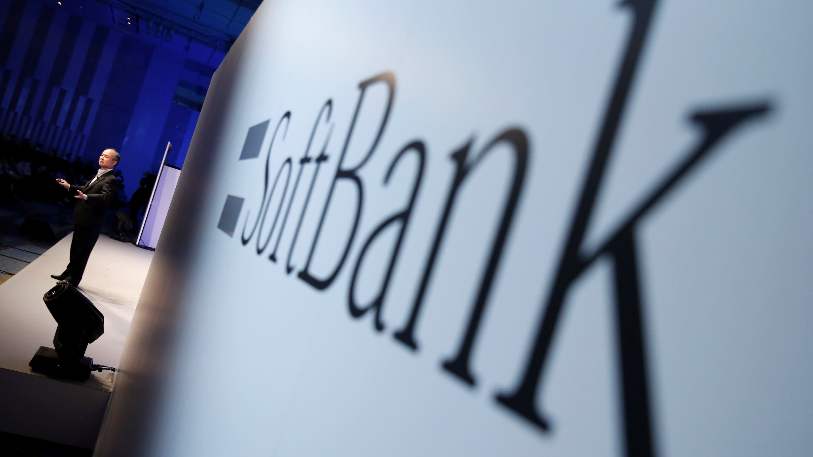

소프트뱅크그룹(영어: SoftBank Group Corp., 일본어: ソフトバンクグループ株式会社)은 일본 최대 IT 회사겸 세계적인 투자회사이다. 일본 시가총액 탑3로서 CEO는 손정의이다. 일본 3대통신사(NTT,KDDI,소프트뱅크)로 일본 국내에서는 유명하지만, 해외에서는 IT기업겸 투자회사로 유명하다.일본국내외 통신, 인공지능, IOT, 기업투자(비전펀드)을 중심으로 사업을 전개중이다.
한국에서는 재일교포4세 손정의(손마사요시)가 창립자 겸 회장이기 때문에 많이 알려져있다.

핵심 계열사로는 소프트뱅크 모바일(일본국내외통신) 소프트뱅크 C&S(무역&유통), 야후 재팬(인터넷), ARM, 보스턴 다이내믹스(로봇), 스프린트가 있으며 110조원의 비전펀드라는 기업투자펀드를 사우디국부펀드, 애플, 퀄컴등의 합동투자를 받아 운용하며 우버, 앤비디아, 알리바바, 사이버리즌, 위워크등 전 세계 유망기업에 투자 중이다.
한국에는 쿠팡에 2015년 1조원에이어 2018년 2조2천억원을 추가로 투자하였다.
한국내에는 자회사로 소프트뱅크 벤쳐스, 소프트뱅크 커머스 코리아를 운영 중이다. by 위키백과